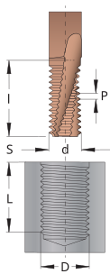

Cómo usar SmiProg
1
Defina la rosca
Seleccione el material, el perfil de rosca y el tamaño, la longitud de rosca y la distancia de seguridad. M utiliza milímetros para el paso; otros perfiles utilizan hilos por pulgada (TPI).
2
Seleccione la fresa de roscar
Utilice una herramienta SmiCut sugerida o introduzca dimensiones de herramienta personalizadas en la selección de herramientas.
3
Verificar salida
Seleccione el proceso de manufactura, el sistema de control y el sentido de la rosca en el programa CNC. Revise los datos de corte, el tiempo de mecanizado y el programa CNC antes del mecanizado.
Antes del mecanizado
Verifica que la fresa de roscas seleccionada pueda mecanizar el diámetro de rosca, el paso y la longitud de rosca. Confirma el programa en simulación o bloque único antes de ejecutar la producción.
